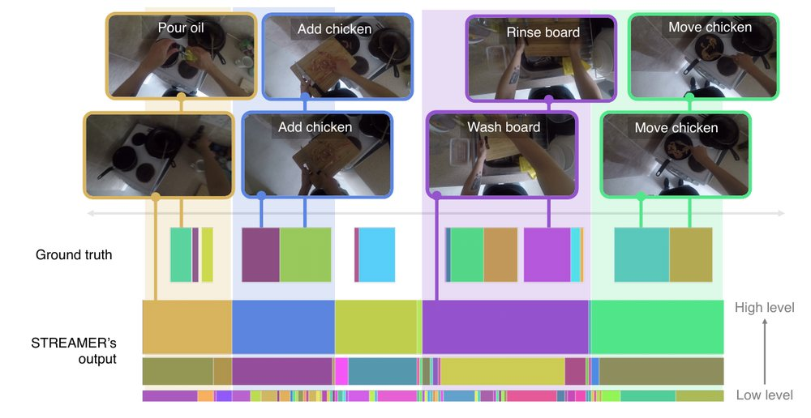
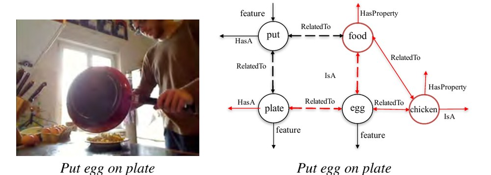
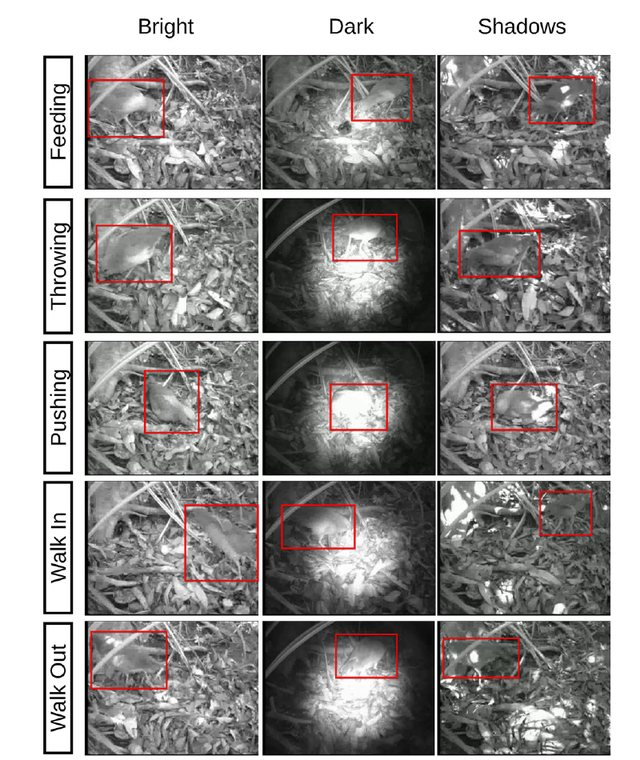
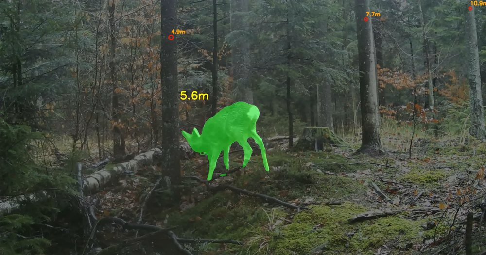
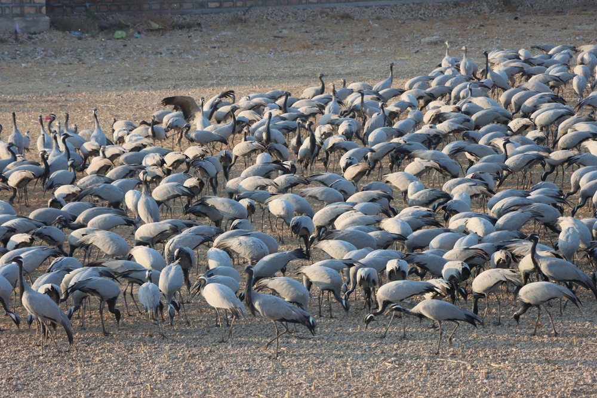
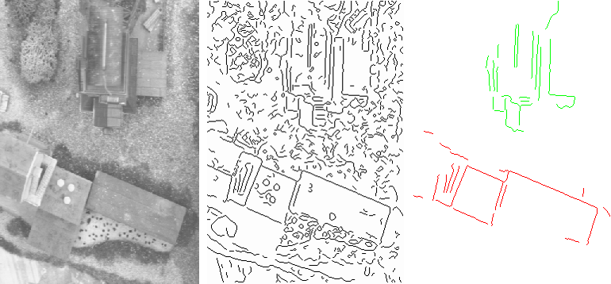
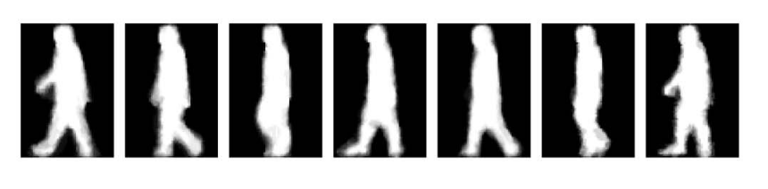

Sudeep Sarkar
Computer vision researcher and university dean
This is Sarkar’s personal page. For the college he leads, see the Bellini College of Artificial Intelligence, Cybersecurity and Computing.
Sudeep Sarkar is a computer scientist at the University of South Florida (USF) in Tampa, where he is a Distinguished University Professor and the Launch Dean of the Bellini College of Artificial Intelligence, Cybersecurity and Computing. His research is in computer vision and pattern recognition; his current work is on self-supervised learning from streaming video, explainable interpretation of scenes, and computer vision for ecology and health. He is known for the HumanID Gait Challenge, the benchmark used to measure progress in gait recognition[1], and for early work on perceptual organization with Bayesian networks and graph spectral methods[2][3].
Sarkar joined USF in 1993. He chaired the Department of Computer Science and Engineering from 2016 to 2024, co-founded the USF Institute for Artificial Intelligence + X, and served in the university’s research office as an associate vice president. Since December 2024 he has led the creation of the Bellini College, which opened in fall 2025 with 3,210 students and 69 faculty. He was co-Editor-in-Chief of Pattern Recognition Letters from 2011 to 2025 and President of the IEEE Biometrics Council in 2019–2020. He is a Fellow of the IEEE, AAAS, IAPR, AIMBE and the National Academy of Inventors.
Education
Sarkar received a B.Tech. in electrical engineering from the Indian Institute of Technology Kanpur in 1988, where he was named the best graduating electrical engineer of his class. He then completed an M.S. (1990) and a Ph.D. (1993) in electrical engineering at The Ohio State University under Kim L. Boyer, supported by a University Presidential Fellowship. His dissertation, On Computing Perceptual Organization in Computer Vision, set the direction of much of his early work.
Research directions
Sarkar’s current research asks how a machine can learn from continuous video the way people learn from experience: in one viewing, without labels, and without forgetting what it learned before. A second question is how such a system can explain what it sees, by tying perception to explicit structure and knowledge. A third continues a line that began with the HumanID Gait Challenge: recognizing people from how they move, at long range and fairly across groups. A fourth is how to make all of this work outside the laboratory, on small devices and with little labeled data. The earlier research described below laid the foundations. Throughout this page, work attributed to Sarkar was done with the students and collaborators named in each section.
Learning from a stream of experience
People divide experience into events by noticing when what happens next stops being predictable. This is the central claim of event segmentation theory, developed by Zacks and colleagues[a]. Sarkar’s group turned it into a way for machines to learn without labels: a model predicts the next moment of a video and marks an event boundary where its prediction fails[4]. The same signal finds where actions happen, and who is performing them, after a single pass through the data[5][6]. STREAMER stacks these predictors into a hierarchy, so that short events nest inside longer ones[7]. Predictive Attractor Models add a memory that learns each new sequence once, keeps the old ones, and can generate several plausible continuations[8]. Its predictor draws on the sequence memory that Hawkins and Ahmad developed at Numenta, in which sparse codes let one context hold several predictions at once[b]. PAM adds an attractor network that separates those predictions and samples one. The cognitive theory is also moving. Recent work from Zacks’s group finds that uncertainty about what comes next, and not only prediction error, marks where people perceive boundaries, and that the brain appears to use both signals[c]. A model that generates several continuations could measure that uncertainty directly.

The work is now moving learning to where the camera is. EDGE-STREAMER segments events in real time on a low-power device[9], a step toward sensors that keep learning after they are deployed.
Funded by the National Science Foundation (2020–2026).
Explainable interpretation of scenes
Deep networks detect objects and actions well, but they say little about how the pieces of a scene fit together, or why. Following Grenander’s pattern theory[d], Sarkar’s group represents an interpretation as a graph of generators (objects, actions and the relations between them) and searches for the graph that best explains uncertain detections[10]. Pattern theory takes an analysis by synthesis approach. To recognize a pattern, a system must be able to generate it. Because the result is an explicit graph, it can be inspected and explained. Commonsense knowledge lets the system describe activities it was never trained on[11], and the same reasoner, used as a teacher, trains language models for commonsense inference without new labels[12].

Work led by Anuj Srivastava’s group at Florida State University, with Sarkar’s group as collaborators, is building a statistical geometry for such graphs. A quotient-space formulation makes it possible to compare, average and model graphs whose nodes have no fixed order[13]. A Kalman smoother built on that geometry tracks how a scene graph evolves through noisy video[14], and SGM-net matches branching shapes such as blood vessels about 220 times faster than earlier methods[15]. The goal is video interpretation that is learned from data but grounded in structure a person can check.
Funded by the National Science Foundation (2012–2016 and 2020–2026, with an I-Corps award in 2016–2017).
Gait and human motion
Gait, the way a person walks, remains an active line of work, now aimed at the hard cases. The motivating applications are in national security abroad, such as protecting deployed forces and controlling access to military installations. At long range, faces are too small to use, so recognition must rely on body shape and motion. Under IARPA’s program on recognition at long range, a team led by Kitware, with partners including Sarkar’s group at USF, built DOERS. It is a multi-modal system that combines face, gait and whole-body appearance to recognize people at long distances and from elevated viewpoints, despite atmospheric turbulence and occlusion[16]. In related work, Pamplona Segundo, Hill and Sarkar matched gait across long distances by fitting a 3D body model with constraints specific to walking[17]. Cole Hill’s 2025 dissertation learns representations of human motion that stay consistent with the body’s dynamics. Gait from a phone’s motion sensors verifies that the person carrying the phone is its owner, however the phone is carried. Ravi Subramanian’s alignment method for this problem received the Best Student Paper Award at the 2015 IEEE International Conference on Identity, Security and Behavior Analysis[18], and later work evaluated such methods in depth[19] (U.S. Patents 9,877,668 and 10,321,855).
The group also asks whether these systems work equally well for everyone. A 2024 study by Ibragimov, Pamplona Segundo, Sarkar and Bowyer used a matched bootstrap analysis to measure how gender affects the accuracy of gait recognition[20]. The same concern with careful measurement produced the HumanID Gait Challenge two decades earlier.
Funded by DARPA (2013–2014) and IARPA (2021–2024).
Vision in the field
The places that most need computer vision often have few labels, long recordings and limited hardware. Ecology is one. With Roman Gula and Jörn Theuerkauf, the group logs a nesting bird’s behavior across ten days of continuous video with no labeled examples[21], and turns monocular depth estimates into calibrated distances for wildlife surveys[22]. Through an NSF partnership with India, Sarkar collaborates with Kshitiz, Mayank Vatsa, Richa Singh and colleagues on benchmarks for counting and studying dense flocks of migratory cranes[23][24]. TurtleVision, developed by Carl Ayala with Sarkar, Griffin, Lamont and Snow, is deployed in operational aerial surveys and detects sea turtle tracks on beaches[25].



Satellite imagery is another. Work led by Rodrigo Minetto and Mauricio Pamplona Segundo measured human and economic activity from space during the COVID-19 pandemic[26][27]. Their detector of airplanes in flight around Europe’s 30 busiest airports was one of two overall winners of the 2020 RACE upscaling competition, run by the European Space Agency with the European Commission, and was added to the RACE dashboard. Separately, we found that satellite foundation models depend more on the quality and variety of their training images than on their number[28]. In health and assistive technology, Sarkar has worked with Dmitry Goldgof’s group and the James A. Haley VA hospital on a tablet with a depth camera that measures pressure ulcers for veterans with spinal cord injury[29] (U.S. Patent 12,524,899), and with Rajiv Dubey’s robotics group on an image-based measure that scores a robot’s grasp in real time[30]. With Dubey’s group, the event models also went into the vision system of a wheelchair-mounted robot arm, so that the arm can anticipate a user’s next step in an everyday task and help with it (NSF, 2018–2024).
Funded by the National Science Foundation (wildlife video, 2020–2026), the Department of Defense and the Department of Veterans Affairs (2016–2021) and USF’s COVID-19 Rapid Response Grant Program (2020–2021).
Earlier research
The current directions grow out of earlier lines of work. Perceptual organization, the grouping problem that began Sarkar’s career, returns in the streaming work as the grouping of moments into events. The concern with careful measurement continues in the datasets and benchmarks his group still builds. Other lines, such as sign language recognition, have concluded.
Perceptual organization
Perceptual organization is the grouping of image features, such as edges and curves, into structures that probably belong to the same object before any object is recognized. The Gestalt psychologists first posed the problem a century ago, with principles such as proximity, good continuation and common fate; a centennial review traces how the principles are now measured quantitatively and studied in the brain[e]. Sarkar and Boyer’s 1993 review proposed a classification of the problem that laid out its open questions[31]. The same year they used Bayesian networks to integrate spatial evidence for grouping, the first use of Bayesian networks for this problem in computer vision[2]. In a 1996 CVPR paper[32], expanded in a 1998 journal article[3], they quantified the organization of a scene through the eigenvalues and eigenvectors of a graph of feature relations. Spectral partitioning of such graphs became a standard approach to image segmentation; the widely used normalized-cuts method followed in 1997. In 2000, with Soundararajan, he showed that the parameters of such grouping can be learned from examples[33]. The question is still open for deep networks. Networks trained on natural images show human-like grouping only at their final layers and only for some stimuli, which suggests they learn grouping differently from people[f]. Grouping also works across time. Johansson showed that a dozen or so moving points of light are seen at once as a person walking, although a still frame rarely looks like one[g]; the same question, applied to time, runs through the group’s current work on events and on gait. Grouping also applies beyond images: Himanshu Vajaria’s work on grouping audio and video segments by speaker in recorded meetings received the IBM Best Student Paper Award at ICPR 2006[34]. An earlier paper designed recursive filters that meet Canny’s criteria for edge detection at much lower computational cost[35]. Later, Sanjukta Bhanja’s group, with Sarkar, carried grouping into hardware: arrays of nanomagnets that settle into low-energy states solve such problems directly (U.S. Patents 9,720,599 and 10,198,402).

Funded by the National Science Foundation through a CAREER award (1995–1998), grants in 1999–2003 and 2008–2012, and a 1999 workshop on perceptual organization in computer vision.
Evaluating vision algorithms
In the 1990s most papers on edge detection showed output images and left judgment to the reader. Heath, Sarkar, Sanocki and Bowyer showed how ratings from human observers can compare edge detectors rigorously, with statistical analysis of the ratings[36][37]. The same concern with measurement shaped his later benchmarks.
The Gait Challenge and biometrics
Gait is the way a person walks. It is a behavioral biometric that can support recognition of a person or verification of a claimed identity. Much of this early work was sponsored by DARPA and the U.S. Army. Before 2005, however, gait recognition results were reported on small private datasets that could not be compared. The HumanID Gait Challenge, developed with DARPA support and led by Sarkar with colleagues at NIST and the University of Notre Dame, supplied a common dataset, a baseline algorithm and a graded set of experiments that vary viewpoint, shoe type, walking surface, carrying condition and elapsed time[1]. It became the standard benchmark for gait recognition. Follow-up work normalized for differences in walking dynamics so that a person could be matched across surfaces and carrying conditions[38]. Liu and Sarkar also showed that a single averaged silhouette, computed over one walking cycle, is a strong representation for recognition[39]; averaged silhouettes remain a common input to gait recognition methods, including deep networks.

Work led by Chang and Bowyer, with Sarkar and Victor, showed that ear images support recognition about as well as face images, and that combining the two works better than either[40]. Work with Mohanty and Kasturi showed that a face template can be reconstructed from match scores alone. The result exposed a privacy weakness that designers of biometric systems need to guard against (U.S. Patent 8,165,352).
Funded by DARPA (2002–2004), the U.S. Army (2003–2005) and Raytheon (2008–2010).
Sign language
From 2003 to 2012 Sarkar worked with Barbara Loeding on automated recognition of American Sign Language in continuous sentences, from ordinary video and without data gloves or markers. Continuous signing is hard for a machine to segment. The hands pass through transitional movements between signs, and in any one frame the hands are hard to separate from each other and from the face. Ruiduo Yang’s nested dynamic programming resolves both ambiguities together in continuous sentences[41]. Sunita Nayak’s work finds signs that recur across sentences, so that models of individual signs can be learned without labeling each one by hand[42]. The group also combined hand motion with facial expression and head movement, which carry grammatical information in ASL, and built a prototype tutor that monitors a learner’s signing. Later work recognizes a gesture from a single example[43].
Funded by the National Science Foundation (2003–2007), the USF Center for Pattern Recognition (2007–2009) and the USF College of Engineering (2011–2012).
Medical and engineering imaging
Medical work began with video-based assessment of burn scars from color, texture and elasticity, and with quantification of melanoma. To separate the color of the skin from the effects of lighting, Powell, Sarkar and Goldgof developed a simple way to calibrate the geometry of light sources relative to the camera[44]. Finite element models of skin let the group estimate tissue stiffness from ordinary video (U.S. Patent 6,594,381), which supported burn scar assessment, evaluation of facial palsy surgery and matching faces across expressions. Engineering applications included measuring pavement cracks for the Florida Department of Transportation and modeling the three-dimensional shape of sand grains.
Funded by the Whitaker Foundation (1996–2000), the U.S. Army Advanced Detection Center (2001–2003), the National Science Foundation (2003–2006) and the Florida Department of Transportation (2007–2008).
Academic leadership
Bellini College (2024–present)
In December 2024 Sarkar was appointed to lead the creation of a new college for artificial intelligence, cybersecurity and computing at USF. The college was established with a $40 million gift from Arnie and Lauren Bellini and opened in fall 2025 with 3,210 students and 69 faculty. It is building a hub-and-spoke model of partnerships, in which the college works with other USF colleges to bring AI and computing into programs they design together. As of November 2026 the college had 22 programs active or in development, up from 10 at its founding, including B.S. and M.S. degrees in artificial intelligence and joint majors that combine computer science with business, criminology, economics, anthropology and the social sciences. Grants from Northeastern University’s CIC (2023–2027) and the National Science Foundation support the design and study of these interdisciplinary majors. Since the college’s founding, its faculty has grown by about 30 percent, lowering the student-to-faculty ratio from 55:1 to 39:1, and added advising staff has lowered the student-to-advisor ratio from 399:1 to 226:1. The Tech Career Advancement Program (tCAP) adds career coaching, industry mentoring and a college-wide experiential learning requirement. In September 2026 USF President Moez Limayem announced the site of the college’s new building, near the main entrance to the Tampa campus.
Computer Science and Engineering (2016–2024)
As chair, Sarkar led a department of 34 tenure-track faculty and 14 instructors serving about 2,600 undergraduate and 300 graduate students. The department’s annual research expenditures doubled over five years, to $4.6 million. The department started a B.S. in Cybersecurity, now ABET-accredited with more than 650 students, and joint graduate programs including a Ph.D. in Big Data Analytics with the Muma College of Business. The 2022 Pathway to Computing program prepares students without a computing background for the M.S. in Computer Science. The department brought in external funding (2020–2024) from Northeastern University’s CIC and Pivotal Ventures to improve the experience of all students in its undergraduate programs. In this period he also co-founded the USF Institute for Artificial Intelligence + X, which he co-directs with Larry Hall.
Research and innovation (2009–2022)
Sarkar’s work in the university’s research office began in 2009, when he became a Research Administration Faculty Fellow. In that role he designed, piloted and institutionalized USF’s process for faculty external honors, prizes and awards. The process keeps a searchable database of more than 2,000 award opportunities, offers workshops for faculty at each career stage, supports the preparation of nominations, and recognizes faculty who receive awards. It became a continuing university service, and USF Research & Innovation still runs it today as the office of Faculty Honors, Prizes and Awards.
As Associate Vice President for Research and Innovation (2012–2016), he co-chaired USF System Research Strategic Planning in 2015–2016, the first research strategic planning effort in USF’s history. A committee of 51 faculty, drawing on input from more than 550 people across the university and the Tampa Bay community, produced the USF Research Strategic Plan for 2017–2021.
He wrote the proposal that led the National Science Foundation to designate USF an I-Corps Site in January 2016, and he directed the site. Its teams learn customer discovery: before forming a company, they test with prospective users whether their technology meets a real need. In 2018 he spoke on a panel about NSF I-Corps at the U.S. Capitol, organized by Representative Dan Lipinski. In October 2024 NSF named USF one of eight partners in the NSF I-Corps Hub: Southeast, led by Georgia Tech, and Sarkar is USF’s co-principal investigator. According to USF’s I-Corps page (August 2026), the program has trained 350 teams, 36 of which went on to the national NSF I-Corps program, and its teams have founded 31 startups that have raised $27 million. With Paul Sanberg and others at USF, he was also a co-investigator on two Economic Development Administration i6 Challenge grants of $1 million each (2012–2015 and 2015–2018), which supported the Tampa Bay WaVE startup accelerator.
From 2014 to 2021 he designed and managed Cyber Florida’s Collaborative Seed Grant Program across Florida’s twelve state universities, at $500,000 a year. Each proposal needed principal investigators from two different universities, so every award started a collaboration between institutions. The program awarded more than $3.75 million, and the funded projects went on to receive more than $15 million in further funding from sources such as NSF. As Associate Vice President for Special Programs (2017–2022), he also started a course modeled on the Department of Defense’s Hacking for Defense.
In 2013–2014, Sarkar and colleagues in USF’s chapter of the National Academy of Inventors played a large role in updating USF’s tenure and promotion guidelines to count patents, licensing and startups as evidence of faculty productivity. With Paul Sanberg and colleagues from several universities he made the case for this change in PNAS[45], and with Sanberg and Judy Genshaft in letters to Science on rewarding academic innovation[46] and to Nature on the gap between universities’ indirect research costs and their reimbursement[47]. He was a charter member of the National Academy of Inventors in 2010 and has served on its Board of Directors since 2013.
Service to the field
As chair of the IEEE Computer Society’s Technical Committee on Pattern Analysis and Machine Intelligence (2010–2012), Sarkar led the community in writing charters for CVPR and ICCV, the committee’s two main conferences, and in updating the committee’s bylaws. As President of the IEEE Biometrics Council (2019–2020), he led the development of its strategic plan, including closer ties with sister organizations such as IAPR. He founded the workshop series on perceptual organization in computer vision. He has served as an area chair for CVPR, ICCV and ECCV, and as general co-chair of CVPR (2024), WACV (2013, 2017 and 2027), the IEEE Conference on Automatic Face and Gesture Recognition (2019), the IEEE Conference on Biometrics: Theory, Applications and Systems (2019), the IEEE International Joint Conference on Biometrics (2014) and ICVGIP (2023).
| Role | Years |
|---|---|
| Co-Editor-in-Chief, Pattern Recognition Letters | 2011–2025 |
| Associate Editor, IEEE Transactions on Pattern Analysis and Machine Intelligence | 1999–2003, 2011–2017 |
| President, IEEE Biometrics Council | 2019–2020 |
| Chair, IEEE Computer Society Technical Committee on Pattern Analysis and Machine Intelligence | 2010–2012 |
| Governing Board, International Association for Pattern Recognition | 2010–2012 |
| Board of Trustees, Southeastern Universities Research Association | 2013–2020 |
| Series Editor, Computer Vision and Pattern Recognition, Elsevier and Academic Press | 2016–2019 |
| Area Chair, CVPR | 2003, 2004, 2012, 2014, 2019, 2020, 2023 |
| Area Chair, IEEE/CVF International Conference on Computer Vision (ICCV) | 2007 |
| Area Chair, European Conference on Computer Vision (ECCV) | 2014 |
| General Co-Chair, IEEE/CVF Conference on Computer Vision and Pattern Recognition (CVPR) | 2024 |
| General Co-Chair, IEEE/CVF Winter Conference on Applications of Computer Vision (WACV) | 2013, 2017, 2027 |
| General Co-Chair, IEEE Conference on Automatic Face and Gesture Recognition | 2019 |
| General Co-Chair, IEEE Conference on Biometrics: Theory, Applications and Systems | 2019 |
| General Co-Chair, IEEE International Joint Conference on Biometrics | 2014 |
| General Co-Chair, Indian Conference on Computer Vision, Graphics and Image Processing | 2023 |
| General Co-Chair, first and second workshops on Perceptual Organization in Computer Vision | 1998, 1999 |
Students
Sarkar has supervised 25 doctoral dissertations and 26 master’s students to completion, and has mentored four postdoctoral scholars and 19 undergraduate researchers. The table lists each doctoral graduate and where they work now, as of November 2026. Entries in grey could not be confirmed as current and give the first position after graduation instead. Names link to LinkedIn profiles.
| Year | Graduate | Dissertation topic | Now at |
|---|---|---|---|
| 2026 | Gilbert Rotich | Geospatial understanding of foundation models: self-supervision, robustness, and resource-constrained learning | Not listed |
| 2025 | Cole Hill | Dynamics-consistent representation learning for human motion analysis and identification | Meta |
| 2024 | Ramy Mounir | On the role of prediction in streaming hierarchical learning | Thousand Brains Project |
| 2019 | Sathyanarayanan Aakur | Beyond labels and captions: contextualizing grounded semantics for explainable visual interpretation | Auburn University |
| 2018 | Ravi Subramanian | Orientation invariance methods for inertial gait | Leidos |
| 2018 | Earnest Hansley | Identification of individuals from ears in real-world conditions | U.S. Army |
| 2017 | Fillipe de Souza | Semantic description of activities in videos | Intel |
| 2015 | Ravi Panchumarthy | Direct solutions to perceptual organization problems | Intel |
| 2014 | Ravi Kiran Krishnan | Generalized conditional matching algorithm for ordered and unordered sets | Meta |
| 2014 | Kester Duncan | Scene-dependent human intention recognition for an assistive robotic system | ObjectVideo Labs |
| 2012 | Aveek Brahmachari | Basal graph structures for geometry based organization of wide-baseline image collections | L&T Semiconductor Technologies |
| 2011 | Saumya P. Amarasiri | Use of innovative computer technology and optical texture properties in the analysis of pavement digital images (co-advised with Gunaratne) | Mercer University |
| 2009 | Vasant Manohar | Facial skin motion properties from video: modeling and applications (co-advised with Goldgof) | DexCare |
| 2008 | Himanshu Vajaria | Diarization, localization and indexing of meeting archives (co-advised with Kasturi) | 365 Retail Markets |
| 2007 | Ruiduo Yang | Dynamic programming with multiple candidates and its applications to sign language and hand gesture recognition | |
| 2007 | Sunita Nayak | Representation and learning in recognition of sign language | Big Vision LLC |
| 2007 | Pranab Mohanty | Learning from biometric distances: performance and security related issues in face recognition systems (co-advised with Kasturi) | Capital One |
| 2007 | Duminda Randeniya | Automatic geo-referencing by integrating camera vision and inertial measurements (co-advised with Gunaratne) | Enbridge |
| 2007 | Nivedita Das | Modeling three-dimensional shape of sand grains using discrete element method (co-advised with Ashmawy) | GEI Consultants |
| 2005 | Yong Zhang | Robust algorithms for property recovery in motion modeling, medical imaging and biometrics (co-advised with Goldgof) | Youngstown State University |
| 2004 | Zongyi Liu | Gait-based human recognition at a distance: performance, covariate impact and solutions | Amazon |
| 2004 | Padmanabhan Soundararajan | Core issues in graph-based perceptual organization: spectral cut measures, learning | Tata Consultancy Services |
| 2002 | Isidro Robledo-Vega | Motion models based on statistics of feature relations: human identification from gait | Instituto Tecnológico de Chihuahua |
| 2000 | Mark Powell | Towards objective color from images (USF Outstanding Dissertation Award) | Yahoo |
| 1999 | Leonid Tsap | Physically-based modeling of nonrigid motion in biomechanics problems (co-advised with Goldgof; USF Outstanding Dissertation Award) | Lawrence Livermore National Laboratory |
Current doctoral students
| Student | Since | Research |
|---|---|---|
| Ahmed Shahabaz | 2020 | Computer vision for wildlife monitoring: event segmentation of long field recordings, and calibrated monocular depth for camera-trap distance sampling |
| Sujal Tiru Vijayaraghavan | 2021 | 3D human body shape and motion, including recognition at long range; earlier, 3D object localization for robot grasping |
| Carl Ayala | 2025 | Computer vision for aerial wildlife surveys, including detection of sea turtle tracks |
| Lucas Miller | 2025 | Self-supervised event segmentation in streaming video on low-power devices |
| Sudip Chakrabarty | 2026 | Computer vision and multimodal AI |
Past postdoctoral scholars include Mauricio Pamplona Segundo, Michal Balazia, Rodrigo Minetto and Guillermo Camara Chavez.
Prospective students
Begin with the current research directions and the work of the group. If you see a connection with your interests, email Sarkar at sarkar@usf.edu with a brief account of the question you want to study, your preparation, and a CV.
Admission and supervision are separate steps. For current opportunities to work with him, please ask by email. Application requirements for the Ph.D. programs are on the Bellini College’s graduate admissions page.
Teaching
Sarkar has taught ten courses at USF since 1993, 62 course offerings in all. Graduate computer vision is his longest-running course: he has taught it 18 times since 1994, most recently in fall 2026. From 1993 to 2009 he also taught undergraduate data structures 18 times. His other courses include computational geometry, digital image processing, pattern recognition, probabilistic inference, image-based biometrics and ethics in computing.
Several of his teaching projects became studies of their own. With an NSF grant (2000–2002), held with Dmitry Goldgof and Kevin Bowyer, he brought image computation into the undergraduate data structures course. He and Goldgof published a set of programming assignments that teach arrays, queues, stacks, trees and hash tables through image processing tasks, designed to fit existing courses with little extra time or software[48]. A 2009–2010 grant from USF’s Center for 21st Century Teaching Excellence supported a case study of “social scribing,” shared lecture notes written on a wiki, in an undergraduate course[49]. He developed an online module, Biometrics for Recognition at a Distance, for the IEEE eLearning Library (2010), and with Fillipe de Souza and Anuj Srivastava he gave a tutorial introduction to Grenander’s pattern theory at SIBGRAPI 2015.
His teaching also extends to how students enter computing. In 2022 he created the Pathway to Computing program, which prepares students without a computing background for the M.S. in Computer Science; with colleagues he described its design[50]. The degree programs he led as department chair and dean are described under Academic leadership, and his doctoral graduates are listed under Students.
He received USF’s Teaching Incentive Program Award in 1996, its Outstanding Undergraduate Teaching Award in 1998, and the Florida Education Fund’s William R. Jones Outstanding Mentor Award in 2017.
Honors
| Year | Honor |
|---|---|
| 2025 | Founder’s Award, National Academy of Inventors |
| 2024 | ACM Distinguished Scientist |
| 2022 | Fellow, International Artificial Intelligence Association (formerly the Asia-Pacific Artificial Intelligence Association) |
| 2021 | Distinguished University Professor, USF |
| 2021 | Member, Academy of Science, Engineering and Medicine of Florida |
| 2020 | IET Biometrics Premium Award for best paper |
| 2017 | William R. Jones Outstanding Mentor Award, Florida Education Fund |
| 2016– | Computer Science and Engineering Endowed Chair, USF |
| 2016 | Fellow, National Academy of Inventors |
| 2016 | Fellow, American Institute for Medical and Biological EngineeringCitation: “for distinguished contributions to the field of gait biometrics and burn scar analysis” |
| 2015 | Best Student Paper Award (with Ravi Subramanian and colleagues), IEEE International Conference on Identity, Security and Behavior Analysis |
| 2014 | Best Scientific Paper Award (with Fillipe de Souza and colleagues), International Conference on Pattern Recognition |
| 2014 | Outstanding Faculty Award, USF |
| 2013 | Fellow, American Association for the Advancement of ScienceCitation: “for distinguished contributions to the field of computer vision and pattern recognition, particularly in perceptual organization, grouping, and biometrics” |
| 2013 | Fellow, Institute of Electrical and Electronics EngineersCitation: “for contributions to computer vision” |
| 2010–2012 | IEEE Computer Society Distinguished Visitor |
| 2010 | Charter Member, National Academy of Inventors |
| 2008 | Fellow, International Association for Pattern RecognitionCitation: “for contributions to computer vision, particularly perceptual organization, segmentation and grouping, and to the evaluation of vision algorithms” |
| 2006 | IBM Best Student Paper Award (with Himanshu Vajaria and colleagues), International Conference on Pattern Recognition |
| 2004 | Theodore and Venette Askounes-Ashford Distinguished Scholar Award, USF |
| 1995 | CAREER Award, National Science Foundation |
Patents
Sarkar is a named inventor on 11 U.S. patents, which have been cited by more than 175 later patents. One, on generating structured data from semi-structured data, has been licensed.
- Automatic pressure ulcer measurement. U.S. 12,524,899 (2026).
- Automatic generation of structured data from semi-structured data. U.S. 10,467,244 (2019).
- Unconstrained ear recognition using a combination of deep learning and handcrafted features. U.S. 10,423,823 (2019).
- Orientation invariant gait matching. U.S. 10,321,855 (2019) and 9,877,668 (2018).
- Magnetic coprocessor and method of use. U.S. 10,198,402 (2019).
- Programmable magnetic energy minimizing co-processor. U.S. 9,720,599 (2017).
- Estimating the magnetization states of a nanomagnet array. U.S. 9,286,687 (2016).
- Indexing face templates using linear models. U.S. 8,331,632 (2012).
- Reconstruction of biometric image templates using match scores. U.S. 8,165,352 (2012).
- Computer vision technique for objective assessment of material properties in nonrigid objects. U.S. 6,594,381 (2003).
Selected publications
The numbered list below holds Sarkar’s papers cited on this page; works by others follow it, by letter. Sarkar’s full record of more than 14,900 citations (Google Scholar, October 2026) is on Google Scholar and DBLP. A “Free full text” link leads to a copy anyone can read: the publisher’s open-access version, the NSF Public Access Repos
- S. Sarkar, P. J. Phillips, Z. Liu, I. Robledo, P. Grother and K. W. Bowyer, “The HumanID Gait Challenge Problem: Data Sets, Performance, and Analysis,” IEEE Transactions on Pattern Analysis and Machine Intelligence, vol. 27, no. 2, pp. 162–177, 2005. Free full text
- S. Sarkar and K. L. Boyer, “Integration, Inference, and Management of Spatial Information Using Bayesian Networks: Perceptual Organization,” IEEE Transactions on Pattern Analysis and Machine Intelligence, vol. 15, no. 3, pp. 256–274, 1993.
- S. Sarkar and K. L. Boyer, “Quantitative Measures of Change Based on Feature Organization: Eigenvalues and Eigenvectors,” Computer Vision and Image Understanding, vol. 71, no. 1, pp. 110–136, 1998.
- S. N. Aakur and S. Sarkar, “A Perceptual Prediction Framework for Self Supervised Event Segmentation,” Proc. IEEE/CVF Conference on Computer Vision and Pattern Recognition (CVPR), 2019. Free full text
- S. Aakur and S. Sarkar, “Action Localization through Continual Predictive Learning,” Proc. European Conference on Computer Vision (ECCV), LNCS 12359, pp. 300–317, 2020. Free full text
- S. N. Aakur and S. Sarkar, “Actor-Centered Representations for Action Localization in Streaming Videos,” Proc. European Conference on Computer Vision (ECCV), 2022. Free full text
- R. Mounir, S. T. Vijayaraghavan and S. Sarkar, “STREAMER: Streaming Representation Learning and Event Segmentation in a Hierarchical Manner,” Advances in Neural Information Processing Systems (NeurIPS), 2023. Free full text
- R. Mounir and S. Sarkar, “Predictive Attractor Models,” Advances in Neural Information Processing Systems (NeurIPS), 2024. Free full text
- L. Miller and S. Sarkar, “EDGE-STREAMER: Lightweight On-Device Event-Hierarchy Segmentation in Streaming Video,” Indian Conference on Computer Vision, Graphics and Image Processing (ICVGIP), 2026.
- F. de Souza, S. Sarkar, A. Srivastava and J. Su, “Spatially Coherent Interpretations of Videos Using Pattern Theory,” International Journal of Computer Vision, vol. 121, no. 1, pp. 5–25, 2017.
- S. N. Aakur, F. de Souza and S. Sarkar, “Generating Open World Descriptions of Video Using Common Sense Knowledge in a Pattern Theory Framework,” Quarterly of Applied Mathematics, vol. 77, pp. 323–356, 2019. Free full text
- S. Aakur and S. Sarkar, “Leveraging Symbolic Knowledge Bases for Commonsense Natural Language Inference Using Pattern Theory,” IEEE Transactions on Pattern Analysis and Machine Intelligence, vol. 45, no. 11, 2023. Free full text
- X. Guo, A. Srivastava and S. Sarkar, “A Quotient Space Formulation for Generative Statistical Analysis of Graphical Data,” Journal of Mathematical Imaging and Vision, 2021.
- A. Basu Bal, R. Mounir, S. Aakur, S. Sarkar and A. Srivastava, “Bayesian Tracking of Video Graphs Using Joint Kalman Smoothing and Registration,” Proc. European Conference on Computer Vision (ECCV), LNCS 13695, pp. 440–456, 2022. Free full text
- S. Liang, A. Srivastava, M. Pamplona Segundo, S. Sarkar and S. Aakur, “Shape-Graph Matching Network (SGM-net): Registration for Statistical Shape Analysis,” Proc. IEEE International Symposium on Biomedical Imaging (ISBI), 2024. Free full text
- D. Du, C. Hill, G. Bertocco, M. Pamplona Segundo, W. Robbins, B. RichardWebster, R. Collins, S. Sarkar, T. Boult and S. McCloskey, “DOERS: Distant Observation Enhancement and Recognition System,” IEEE International Joint Conference on Biometrics (IJCB), 2023.
- M. Pamplona Segundo, C. Hill and S. Sarkar, “Long Range Gait Matching Using 3D Body Fitting with Gait-Specific Motion Constraints,” Proc. IEEE/CVF Winter Conference on Applications of Computer Vision Workshops (Long Range Recognition), 2023.
- R. Subramanian, S. Sarkar, M. Labrador, K. Contino, C. Eggert, J. Zhu and H. Cheng, “Orientation Invariant Gait Matching Algorithm Based on the Kabsch Alignment,” Proc. IEEE International Conference on Identity, Security and Behavior Analysis (ISBA), 2015.
- R. Subramanian and S. Sarkar, “Evaluation of Algorithms for Orientation Invariant Inertial Gait Matching,” IEEE Transactions on Information Forensics and Security, vol. 14, no. 2, pp. 304–318, 2019.
- A. Ibragimov, M. Pamplona Segundo, S. Sarkar and K. W. Bowyer, “Unveiling Gender Effects in Gait Recognition Using Conditional-Matched Bootstrap Analysis,” Proc. IEEE International Conference on Automatic Face and Gesture Recognition (FG), 2024.
- R. Mounir, A. Shahabaz, R. Gula, J. Theuerkauf and S. Sarkar, “Towards Automated Ethogramming: Cognitively Inspired Event Segmentation for Streaming Wildlife Video Monitoring,” International Journal of Computer Vision, vol. 131, 2023. Free full text
- A. Shahabaz, J. Toczydłowska, R. Gula, J. Theuerkauf and S. Sarkar, “From Relative to Metric: Calibrating AI-Based Monocular Depth Learning Models for Distance Sampling in Wildlife Monitoring Applications,” Ecological Informatics, vol. 96, 103846, 2026.
- Kshitiz, S. Shreshtha, R. Mounir, M. Vatsa, R. Singh, S. Anand, S. Sarkar and S. M. Parihar, “Long-Term Monitoring of Bird Flocks in the Wild,” Proc. International Joint Conference on Artificial Intelligence (IJCAI), pp. 6344–6352, 2023. Free full text
- Kshitiz, S. Shreshtha, B. Dutta, M. Dosi, M. Vatsa, R. Singh, S. Anand, S. Sarkar and S. Mali Parihar, “BirdCollect: A Comprehensive Benchmark for Analyzing Dense Bird Flock Attributes,” Proc. AAAI Conference on Artificial Intelligence, vol. 38, no. 20, pp. 21879–21887, 2024. Free full text
- C. Ayala, S. Sarkar, L. P. Griffin, M. M. Lamont and S. Snow, “TurtleVision: A Deployed Multiscale Ensemble for Sea Turtle Track Detection in Operational Aerial Surveys,” IEEE/CVF Winter Conference on Applications of Computer Vision (WACV), 2027.
- R. Minetto, M. Pamplona Segundo, G. Rotich and S. Sarkar, “Measuring Human and Economic Activity from Satellite Imagery to Support City-Scale Decision-Making during COVID-19 Pandemic,” IEEE Transactions on Big Data, vol. 7, no. 1, pp. 56–68, 2021. Free full text
- M. P. Segundo, A. Pinto, R. Minetto, R. da Silva Torres and S. Sarkar, “Measuring Economic Activity from Space: A Case Study Using Flying Airplanes and COVID-19,” IEEE Journal of Selected Topics in Applied Earth Observations and Remote Sensing, vol. 14, pp. 7213–7224, 2021. Free full text
- G. Rotich and S. Sarkar, “Evaluating the Robustness of Foundation Models for Satellite Imagery,” IEEE Access, vol. 13, pp. 107720–107735, 2025. Free full text
- C. Y. Pai, H. Morera, S. Sarkar, Y. Huang, K. S. Hall, L. J. Cowan, M. Peterson and D. Goldgof, “Automated Pressure Ulcer Dimension Measurements Using a Depth Camera,” Journal of Wound Care, vol. 34, no. 3, pp. 205–214, 2025.
- T. Tan, R. Alqasemi, R. Dubey and S. Sarkar, “Formulation and Validation of an Intuitive Quality Measure for Antipodal Grasp Pose Evaluation,” IEEE Robotics and Automation Letters, vol. 6, no. 4, pp. 6907–6914, 2021. Free full text
- S. Sarkar and K. L. Boyer, “Perceptual Organization in Computer Vision: A Review and a Proposal for a Classificatory Structure,” IEEE Transactions on Systems, Man, and Cybernetics, vol. 23, no. 2, pp. 382–399, 1993.
- S. Sarkar and K. L. Boyer, “Quantitative Measures of Change Based on Feature Organization: Eigenvalues and Eigenvectors,” Proc. IEEE Conference on Computer Vision and Pattern Recognition (CVPR), pp. 478–483, 1996.
- S. Sarkar and P. Soundararajan, “Supervised Learning of Large Perceptual Organization: Graph Spectral Partitioning and Learning Automata,” IEEE Transactions on Pattern Analysis and Machine Intelligence, vol. 22, no. 5, pp. 504–525, 2000.
- H. Vajaria, T. Islam, S. Sarkar, R. Sankar and R. Kasturi, “Audio Segmentation and Speaker Localization in Meeting Videos,” Proc. International Conference on Pattern Recognition (ICPR), vol. 2, pp. 1150–1153, 2006.
- S. Sarkar and K. L. Boyer, “On Optimal Infinite Impulse Response Edge Detection Filters,” IEEE Transactions on Pattern Analysis and Machine Intelligence, vol. 13, no. 11, pp. 1154–1171, 1991.
- M. Heath, S. Sarkar, T. Sanocki and K. W. Bowyer, “A Robust Visual Method for Assessing the Relative Performance of Edge Detection Algorithms,” IEEE Transactions on Pattern Analysis and Machine Intelligence, vol. 19, no. 12, pp. 1338–1359, 1997. Free full text
- M. Heath, S. Sarkar, T. Sanocki and K. W. Bowyer, “Comparison of Edge Detectors: A Methodology and Initial Study,” Computer Vision and Image Understanding, vol. 69, no. 1, pp. 38–54, 1998.
- Z. Liu and S. Sarkar, “Improved Gait Recognition by Gait Dynamics Normalization,” IEEE Transactions on Pattern Analysis and Machine Intelligence, vol. 28, no. 6, pp. 863–876, 2006.
- Z. Liu and S. Sarkar, “Simplest Representation Yet for Gait Recognition: Averaged Silhouette,” Proc. International Conference on Pattern Recognition (ICPR), 2004.
- K. Chang, K. W. Bowyer, S. Sarkar and B. Victor, “Comparison and Combination of Ear and Face Images in Appearance-Based Biometrics,” IEEE Transactions on Pattern Analysis and Machine Intelligence, vol. 25, no. 9, pp. 1160–1165, 2003. Free full text
- R. Yang, S. Sarkar and B. Loeding, “Handling Movement Epenthesis and Hand Segmentation Ambiguities in Continuous Sign Language Recognition Using Nested Dynamic Programming,” IEEE Transactions on Pattern Analysis and Machine Intelligence, vol. 32, no. 3, pp. 462–477, 2010.
- S. Nayak, K. Duncan, S. Sarkar and B. Loeding, “Finding Recurrent Patterns from Continuous Sign Language Sentences for Automated Extraction of Signs,” Journal of Machine Learning Research, vol. 13, pp. 2589–2615, 2012. Free full text
- R. Krishnan and S. Sarkar, “Conditional Distance Based Matching for One-Shot Gesture Recognition,” Pattern Recognition, vol. 48, no. 4, pp. 1302–1314, 2015.
- M. W. Powell, S. Sarkar and D. B. Goldgof, “A Simple Strategy for Calibrating the Geometry of Light Sources,” IEEE Transactions on Pattern Analysis and Machine Intelligence, vol. 23, no. 9, pp. 1022–1027, 2001.
- P. R. Sanberg, M. Gharib, P. T. Harker, E. W. Kaler, R. B. Marchase, T. D. Sands, N. Arshadi and S. Sarkar, “Changing the Academic Culture: Valuing Patents and Commercialization toward Tenure and Career Advancement,” Proceedings of the National Academy of Sciences, 2014. Free full text
- P. R. Sanberg, J. Genshaft and S. Sarkar, “Rewarding Academic Innovation,” Science, vol. 346, no. 6212, pp. 928–929, 2014.
- P. R. Sanberg, J. Genshaft and S. Sarkar, “Indirect Costs: The Reimbursement Gap,” Nature, vol. 517, p. 438, 2015.
- S. Sarkar and D. B. Goldgof, “Integrating Image Computation in Undergraduate Level Data-Structure Education,” International Journal of Pattern Recognition and Artificial Intelligence, vol. 12, no. 8, pp. 1071–1080, 1998.
- S. Sarkar, “Wiki-Enhanced Social Scribing of Lectures: A Case Study in an Undergraduate Course,” Frontiers in Education Conference (FIE), 2009.
- J. Anderson, X. Ou, S. Sarkar and J. Wang, “Pathway to Computing: An Innovative Approach to Inviting Non-Computing Students into Graduate Computer Science Programs,” Frontiers in Education Conference (FIE), 2025. lm.nih.gov/articles/PMC4020064">Free full text
Other works cited
- J. M. Zacks, N. K. Speer, K. M. Swallow, T. S. Braver and J. R. Reynolds, “Event Perception: A Mind–Brain Perspective,” Psychological Bulletin, vol. 133, no. 2, pp. 273–293, 2007.
- J. Hawkins and S. Ahmad, “Why Neurons Have Thousands of Synapses, a Theory of Sequence Memory in Neocortex,” Frontiers in Neural Circuits, vol. 10, art. 23, 2016. Free full text
- T. T. Nguyen, J. A. Etzel, M. A. Bezdek and J. M. Zacks, “Multiple Event Segmentation Mechanisms in the Human Brain,” eLife, vol. 14, RP107955, 2025.
- U. Grenander, General Pattern Theory: A Mathematical Study of Regular Structures, Oxford Mathematical Monographs, Oxford: Clarendon Press, 1993.
- J. Wagemans, J. H. Elder, M. Kubovy, S. E. Palmer, M. A. Peterson, M. Singh and R. von der Heydt, “A Century of Gestalt Psychology in Visual Perception: I. Perceptual Grouping and Figure–Ground Organization,” Psychological Bulletin, vol. 138, no. 6, pp. 1172–1217, 2012.
- V. Biscione and J. S. Bowers, “Mixed Evidence for Gestalt Grouping in Deep Neural Networks,” Computational Brain & Behavior, vol. 6, no. 3, pp. 438–456, 2023.
- G. Johansson, “Visual Perception of Biological Motion and a Model for Its Analysis,” Perception & Psychophysics, vol. 14, no. 2, pp. 201–211, 1973.
External links
Contact: sarkar@usf.edu. Office ENG 030, University of South Florida, 4202 East Fowler Avenue, Tampa, Florida 33620. Telephone (813) 974-2113.